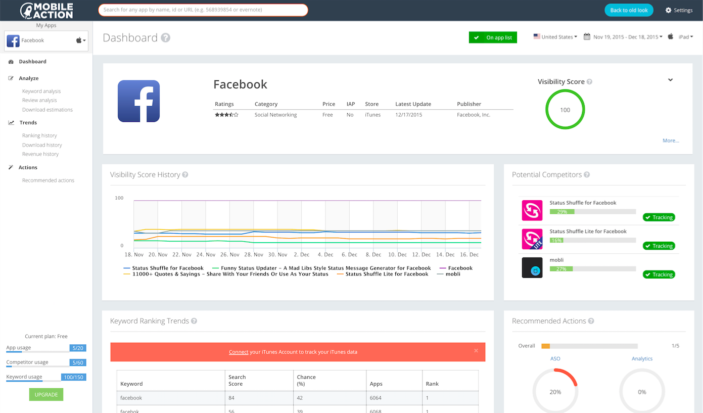

Product Redesign: Dashboard

Old Dashboard
Overview
Mobile Action's dashboard is the heart and soul of the company and what it has to offer. This product feed users information and analytics on not only their app performance but also their competitors' performance on the Google Play Store and Apple App Store. All the data provided by Mobile Action analytics can help users become more proactive in making their app gain more visibility and generate more downloads.
The focus and goal of this complete UI redesign was simplify the old design and streamlining the process for users to easily optimize their application.
The Work
{kind=link}
Old Accordion Navigation
{kind=link}
Redesigned Navigation Bar v.1
{kind=link}
Final Navigation Bar
Working with the product team to decide on the layout presentation of the new UI, one of the essential focuses was the navigation. For the main navigation on the left side, I wanted to transform the old dropdown accordion list to a more openly transparent navigation list for users to quick access any desired features. Also, moving the fundamental navigation options such as "Settings" to the top right corner of the page allows the focus for the side bar navigation to be solely on app relevance.
Challenges
One of the main challenges imposed on this project was the time frame and role responsibilities. Agile development was necessary for quick pushes and multiple iterations for production. As a team, we had to repeatedly learn how to not get caught up with the little details and to release quickly to make deadlines. Communication was also another major factor since the Project Managers, whose English was a second language, also took on the roles of being the primary Designers for the project.
Final Product
The final product contains over 7 individual pages that links from the dashboard that goes into further detail on each data analysis, as seen on the side navigation menu.
{kind=link}
New Dashboard
Tools Used
• HTML • CSS/LESS/Sass • JavaScript